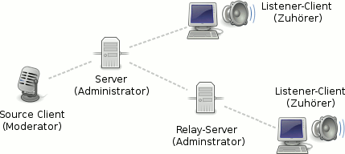

Funktionsweise
 Um Internetradio selbst zu produzieren, benötigt man verschiedene Software für die Radiostation, die Moderatoren und für die Zuhörer. In diesem Artikel soll für besonders interessierte Einsteiger der technische Hintergrund dazu beleuchtet werden. Gerade für angehende Administratoren und Moderatoren von Internetradio-Sendern ist ein umfassender Überblick hilfreich.
Um Internetradio selbst zu produzieren, benötigt man verschiedene Software für die Radiostation, die Moderatoren und für die Zuhörer. In diesem Artikel soll für besonders interessierte Einsteiger der technische Hintergrund dazu beleuchtet werden. Gerade für angehende Administratoren und Moderatoren von Internetradio-Sendern ist ein umfassender Überblick hilfreich.
Ubuntu bietet mit zahlreichen Programmen bis hin zum Tonstudio eine Vielzahl von Möglichkeiten, auch mit geringen Hardwareanforderungen hochwertige Radiosendungen zu erstellen, ob live oder als Podcast. In diesem Artikel wird vor allem auf das Live-Senden eingegangen.
Zum Betreiben eines öffentlich verfügbaren Internetradios – dazu zählt auch ein frei zugänglicher Musikserver – braucht man in Deutschland im Gegensatz zu einem Rundfunksender bei weniger als 500 Nutzern keine Sendelizenz. Allerdings fallen Gebühren von derzeit mind. 530 EUR pro Jahr an (Stand: 2010), wenn man "abgabepflichtige" Musik im Sinne der GEMA sendet. Besonders unangenehm ist, dass diese Gebühren auch nachträglich fällig werden können. Umgehen kann man dies nur, indem man ausschließlich Beiträge oder Titel mit einer Lizenz, die ausdrücklich die weitere Verbreitung gestattet (z.B. Creative Commons), sendet. Siehe auch GEMA-Information zum Betrieb von Webradios  und Lizenzierung und Kosten.
und Lizenzierung und Kosten.
Sendeprinzip¶
Im Gegensatz zum Podcast besteht die Verbindung nicht nur zwischen einem Client, der fertige Inhalte abruft und dem Server, der sie bereitstellt - beim "klassischen" Internetradio sendet ein DJ/Moderator einen Stream an den Server, von dem wiederum die Zuhörer (Listener) ihren Stream beziehen. Der Datenverkehr für die Weboberfläche und die Angabe der Metadaten des Streams findet dabei in beiden Richtungen über das Protokoll HTTP statt.
Folgende Übersicht stellt das Sendeprinzip dar: 
Server¶
Ein Server bildet die Radiostation und kann mittels weiterer Server ("Relay-Server") den Stream an die Zuhörer in verschiedenen Bandbreiten und Stream-Formaten weiterleiten. Der Moderator verbindet sich dabei nur mit dem Hauptserver, die Zuhörer dagegen in der Regel mit dem Relay-Server ihrer Wahl.
Verschiedene Mountpoints (Einhängepunkte) auf dem Server dienen dazu, mehrere Sendungen gleichzeitig oder eine Sendung auf einem einzelnen Server, aber in verschiedenen Bitraten anzubieten.
Bei der Auswahl der Server-Software empfiehlt sich als Open-Source-Software mit Streams in variabler Bitrate die Server-Software Icecast2, die als stabile Version für alle Ubuntu-Versionen in den offiziellen Paketquellen enthalten ist.
Client¶
Beim Internetradio wird grundsätzlich zwischen zwei Arten von Clients unterschieden:
Source-Client - die Software für Moderatoren zum Senden des Streams
Listener-Client - die Software für Zuhörer zum Empfangen des Streams
Source-Client¶
Der Source-Client ist die Software der Moderatoren, die den Stream an den Server und darüber an die Zuhörer senden. Der Zugang des Benutzers bzw. der Gruppe source wird mit einem Passwort geschützt.
Bei der Auswahl der Moderatoren-Software empfiehlt sich als Open-Source-Software mit komfortabler Bedienoberfläche die Internet DJ Console und als schlanke und vielseitige Lösung Darkice.
Listener-Client¶
Fast alle AudioPlayer sind mit entsprechenden Codecs in der Lage, einen Stream abzuspielen. Je nach Streamformat muss ggf. die Stream-Adresse, die dem Player übergeben wird, bezüglich Protokoll und Streamformat angepasst werden. So benötigen einige Player statt mms://URL/playliste.m3u die Übersetzung http://URL:8000 - oder andersherum- hier ist oft Kreativität gefragt.
Weitere Informationen zum Abspielen bieten die Artikel zu den einzelnen AudioPlayern und ein Artikel zu speziellen Streaming-Formaten.
Stream¶
Ein Internetradio-Stream besteht aus den Audiodaten und zusätzlichen Meta-Informationen. Diese umfassen in der Regel Informationen zur Radiosendung und zum laufenden Musiktitel.
Metadaten¶
Die Informationen zur laufenden Sendung, wie Name der Sendung und des DJ/Moderators, können von der Server-Software an den Zuhörer geleitet werden, was für den Administrator des Servers ausreicht, aber nicht für die Moderatoren. Deren Software sollte in der Lage sein, neben diesen Daten auch die Metadaten der laufenden Titel aus den Audiodateien zu lesen und an den Server zu übermitteln.
Hierbei bietet die Internet DJ Console den größten Komfort, da sie nicht nur die Metadaten automatisch an den Server senden kann, sondern auch an einen ggf. vorhandenen IRC-Channel.
Audio¶
Audiodateien liegen gewöhnlich in verschiedenen Formaten vor, für die jeweils die nötigen Codecs auf dem Source-Client vorhanden sein müssen. Die Source-Clients senden im besten Fall in einem festgelegten Format an den Server, welches von diesem nicht mehr umgewandelt werden muss.
Als komprimiertes Format mit variabler Bitrate bietet Vorbis (OGG) ein ausgeglichenes Verhältnis an Qualität und Ressourcen-Bedarf.
Test-Rechner¶
Um auf einem einzelnen Rechner zu testen, wie gut Server und Source-Client zusammenspielen, bietet sich gerade bei leistungsschwacher Hardware eine Audioworkstation mit Echtzeitkernel und die Anwendung besonderer Prozess-Steuerung an. Damit können alle Prozesse so optimiert werden, dass auch ohne Hardware-Mixing seitens der Soundkarte für den Moderator bzw. DJ optimale Bedingungen herrschen.
Links¶
Intern¶
Tonstudio
 Übersichtsartikel
ÜbersichtsartikelTonstudio-Konfiguration – Einrichtung einer Audioworkstation
Ubuntu Studio – offizielle Ubuntu-Variante mit vielen Voreinstellungen für eine Audioworkstation
Internetradio - Hauptartikel
- Erstellt mit Inyoka
-
 2004 – 2017 ubuntuusers.de • Einige Rechte vorbehalten
2004 – 2017 ubuntuusers.de • Einige Rechte vorbehalten
Lizenz • Kontakt • Datenschutz • Impressum • Serverstatus -
Serverhousing gespendet von